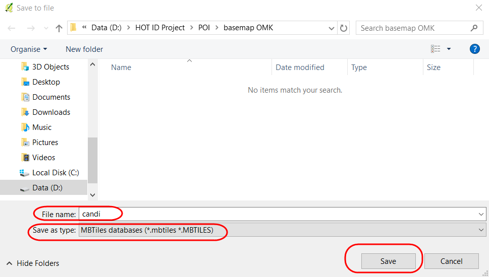

Creating MBTiles for OpenMapKit (OMK)
Download page as PDFObjectives:
- To be able to understand the concept of MBTiles
- To be able to create MBTiles using Export Tool
- To be able to create MBTiles using Plugin QTiles
- To be able to add file MBTiles into OMK in smartphone
When you use the OpenMapKit (OMK) application to conduct field surveys, sometimes you will have difficulty in determining objects in the application. It may happen because the background map is not yet mapped in OpenStreetMap and you do not have time to digitize objects in the survey area. You can use MBTiles file for background map, which is a satellite imagery, to make it easier for you to identify objects in the field.
I. The definition of MBTiles
MBTiles is the spatial data format for storing several map tiles that are combined into one file as raster format, so that it looks like satellite imagery. You can use MBTiles as a basemap in the OMK application, which makes it easier for users to mark objects in the field. Basemap is a basic map that is used as the background of an application. It can be in the form of satellite imagery and OSM map.

The display of MBTiles in QGIS
II. Creating MBTiles using Export Tool
Export Tool is one of the sites that is used to download OpenStreetMap data for free based on certain features and regions. Spatial data formats that are commonly used, namely Shapefile (.shp), GeoPackage (.gpkg), and MBTiles (.mbtiles). The steps to create MBTiles using export tools are:
- Open your web browser and go to link URL https://export.hotosm.org/en/v3/, you need to login first to your OpenStreetMap account. If you do not have an account, you should go to https://www.openstreetmap.org to create one. You can refer to Getting Started with OpenStreetMap for the details.
- After you successfully login, click Start Exporting.

Export Tool homepage
- Complete the dialog box on the left as a project description and select the area that you want. Area selection can be made with several ways using tools in the right panel. You should not make too large area selection for MBTiles area, because it will cause failure during the process. If you have administrative boundary in .geojson format, you can use the Import option. The important thing is that .geojson file must consist of one type of attribute data. In this module, the feature that will be used is Import option. Select Import and add your .geojson file. If you do not have a .geojson file, you can refer to Converting shapefile data to GeoJSON module.

The settings of Describe Menu
- Next step, click Format Menu → Give a check mark on MBTiles option

The selection of spatial data format
Then click on the Data menu section, you must copy the URL address of the tilemap from the satellite imagery that will be used as the basemap. You might only see OpenStreetMap as one of the options for creating MBTiles. By default Export Tools only provides OpenStreetMap as the background for your MBTiles by default. However, you can easily add another satellite imagery links. To add a link below, select one of the available satellite imagery, copy the link below and paste it in the MBTiles Source box in the Data menu.
**_Mapbox Satellite _** http://a.tiles.mapbox.com/v4/openstreetmap.map-inh7ifmo/{z}/{x}/{y}.png?access_token=pk.eyJ1Ijoib3BlbnN0cmVldG1hcCIsImEiOiJncjlmd0t3In0.DmZsIeOW-3x-C5eX-wAqTw **_Digital Globe _** https://a.tiles.mapbox.com/v4/digitalglobe.316c9a2e/{z}/{x}/{y}.png?access_token=pk.eyJ1IjoiZGlnaXRhbGdsb2JlIiwiYSI6ImNqZGFrZ2c2dzFlMWgyd2x0ZHdmMDB6NzYifQ.9Pl3XOO82ArX94fHV289PgAfter you paste the link, you can swipe to the left and select the link that you entered.

The setting of satellite imagery link source
- You can change the Zoom Range setting to select the zoom level for MBTiles display. We need to keep in mind that if the distance between the zoom range is getting farther away, the file size will be even greater.

The setting of Zoom Level

Left (zoom level 10) and right (zoom level 18)
- Last step is select Summary menu, this section will show the summary of your project. If your project wants to be seen by other users, you can choose Publish this Export. Then click Create Export to process the creation of MBTiles.
Last step in the Export Tool settings
- The process of making MBTiles will take several minutes depending on the internet network, the area size, and the zoom range that has been set previously. You do not need to wait, because the export tool will notify you through email when the process is complete. You can also see other projects that have been created in the Exports Menu.

The display of Exports menu
- After the process completed, the project status should be changed to COMPLETED. Click the file name in the blue color to download .mbtiles file directly.

Downloading MBTiles file
- MBTiles can be opened using mapping software such as QGIS, so that it displays offline satellite imagery. This way can be used to check the .mbtiles file first before inserting it into the OMK application, open QGIS → Add Raster Layer.

The display of MBTiles in QGIS
III. Creating MBTiles using Plugin QTiles
The QTiles plugin is a plugin that can be used to produce tile rasters from QGIS project. This plugin can save the tile raster display settings from tilemap services such as Slippy map, TMS. You can use the QuickMapServices plugin in the previous module Creating Field Maps with QGIS to display tile raster services. Another advantage of using this plugin is that you can display the road layers and administrative boundaries in the QGIS project, so that the OMK basemap display will help data entry in the field surveys introduction. The steps to create .mbtiles with the QTiles plugin are as follows:
a. Installing Plugin QTiles
- Open QGIS and_ _install the plugin by clicking Plugin Menu → Manage and Install Plugin. Type “qtiles” in Search box so your display will be the same as the picture below, give a check mark and click Install Plugin. If your download process failed, check your internet connection immediately.

Installing Plugin QTiles
- QTiles will appear in Plugin Menu → QTiles → QTiles

QTiles plugin
b. Preparing Data Layer
- Add administrative data layer and road network that is taken from field survey mapping. Then, click Add Vector Layer → choose the directory file → Open → Open. Data layer will appear in both map canvas and layer panel.

Adding layer
- You should do symbology and labelling to the layer in order to facilitate data entry in field survey introduction.

Symbology and labelling
- Now you can add tilemap data layer to display satellite imagery on map canvas in QGIS by clicking _Web _menu_ → QuickMapServices → Search QMS_

QuickMapServices Plugin
- In the search box Search QMS search box, type DigitalGlobe Premium Imagery, then click_ Add_.

Basemap selection
- Satellite imagery basemap will appear in both layer panel and map canvas.

The display of DigitalGlobe Imagery satellite imagery
c. Using QTiles Plugin
- You can set up the appearance of your data layer, for example, you can set the appearance of administrative boundaries to speed up the mbtiles making process.

The setting of administrative boundary display
- To show QTiles plugin, click Menu Plugin → QTiles → QTiles. Then, QTiles dialog box will appear, click Browse in Directory and make a new folder and file name in your laptop/computer. Save the file as .mbtiles type.

Saving a new file in QTiles
- You can adjust the zoom level on the digital globe basemap with the settings located under the QTiles dialog box. Make adjustments to the minimum zoom and maximum zoom, the distance between the two should not be too far to speed up the process of making .mbtiles. Click Run to start the .mbtiles creation process. This process will require the internet network.

Settings in QTiles
- When the process is completed, then you can click Close. To check the .mbtiles file, you can insert the file into QGIS by using Add Raster Layer → navigate to your storage directory → click Open.
Searching mbtiles file
- The mbtiles display will appear on QGIS canvas map as shown below

.mbtiles result
IV. Inserting MBTiles into OMK
In this process, you already have .mbtiles file that will be inserted into OMK application on android smartphone.
- Connect the smartphone device with the computer to move the two files into the OMK application with the data cable/USB.
- Find the OMK application in the smartphone’s internal directory, navigate to the mbtiles folder. You should copy the mbtiles file into mbtiles folder.

OpenMapKit (OMK) directory
- Open the OpenMapKit application on your smartphone and activate the .mbtiles file that has been moved by clicking the Basemap Menu in the OpenMapKit application. You can refer to Using OpenMapKit Application module to find out how the application works.

.mbtiles file when opened in OMK
SUMMARY
If you have already finished this module, you can create all basemaps based on the administrative area that is needed for the OMK application for field survey. Please replace .mbtiles file per day based on the survey area in your smartphone so it will not burden your smartphone’s performance.